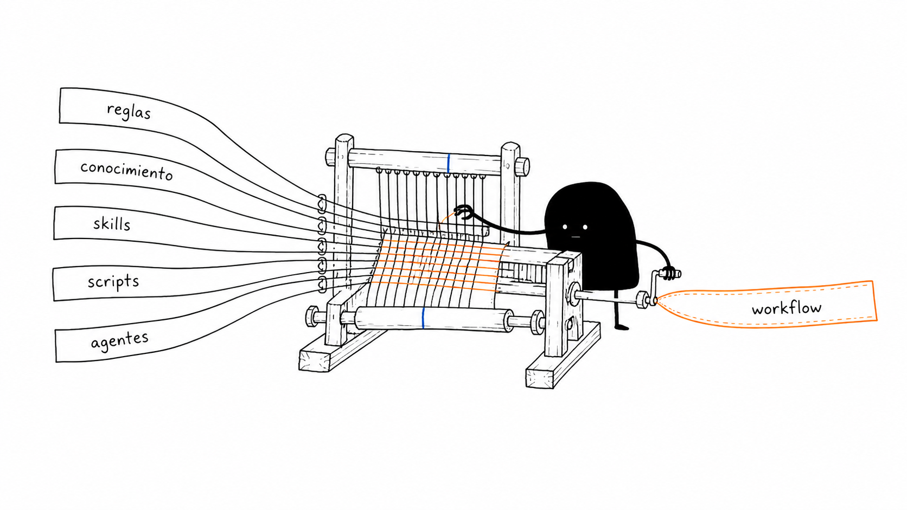
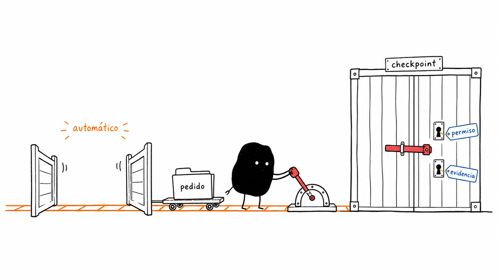

1. Modelo
Razona y genera respuestas. Por ejemplo, GPT-5.6 Sol o
Claude Opus.
Presentación
Una estructura operativa para que los agentes de IA trabajen con el contexto, las reglas, las herramientas y los workflows de Sky.
01 — Contexto
Es una capa operativa —también llamada agent harness— que se instala en un proyecto y organiza lo que el agente de IA necesita para trabajar en Sky.
Razona y genera respuestas. Por ejemplo, GPT-5.6 Sol o
Claude Opus.
Utiliza el modelo y puede leer archivos, ejecutar comandos y usar herramientas.
Por ejemplo, Codex o Claude Code.
QDD Sky especializa al agente con reglas, conocimiento, automatizaciones y workflows para trabajar en Sky.
Resolver iniciativas, investigar comportamientos, validar cambios y preparar entregas.
02 — Entorno de operación
QDD trabaja sobre los sistemas, herramientas y ambientes que Sky habilita para la persona o el agente. Su alcance real depende de la infraestructura, la conectividad, las herramientas y los permisos disponibles.
Jira, GitLab, repositorios, documentación y conocimiento instalado en el proyecto.
Archivos locales, scripts, pruebas, pipelines, ambientes y cargas de Kubernetes.
Logs, métricas, trazas, eventos, configuración y estado observable de los sistemas.
La identidad, las credenciales, la red y los permisos determinan qué puede consultar o ejecutar.
Organiza cómo utilizar esos recursos y cómo continuar cuando falta acceso, evidencia o una decisión.
03 — Objetivo
El usuario indica el resultado que necesita. La estructura instalada se encarga de resolver cómo llegar hasta ese resultado.
04 — Componentes

05 — Workflows
Un resultado completo utiliza un workflow. Una tarea puntual utiliza una instrucción específica. El código de cada tarjeta indica el estado que puede devolver.
sky-take-ticket
Pedido“Resuelve VC-1303.”
Confirmar alcance, criterios, dudas y riesgo.
Encontrar repositorios, componentes, archivos e historial.
Seguir los datos y definir qué debe cambiar.
Modificar solo el código y la configuración necesarios.
Revisar el conjunto y ejecutar las validaciones.
Publicar la rama y comprobar el MR resultante.
Ajusta la exploración y las verificaciones a la complejidad y los componentes afectados.
Verifica quién produce el dato, quién lo utiliza y qué resultado genera.
Deja la rama publicada, el MR creado y las verificaciones realizadas sobre el cambio.
sky-investigate-issue
Pedido“Me reportan este error en Stage. Investiga qué ocurre.”
Identificar qué componentes participan y cómo circulan los datos.
Comparar lo observado con el contrato y el historial.
Seguir el mismo caso entre servicios hasta encontrar dónde falla.
Pedido, correlador, evento o acción inicial.
Quién crea el dato o dispara el comportamiento.
API, mensaje, configuración o integración utilizada.
Cómo interpreta y transforma el dato.
Dónde se guarda el dato y con qué identificador se puede buscar.
Resultado visible y último punto que se pudo verificar.
Explicación respaldada por evidencia, recorrido, impacto y siguiente acción recomendada.
sky-verify-change
Pedido“Valida VC-1303 en QA.”
Identificar el commit, tag, imagen o versión exacta.
Comprobar que el ambiente ejecuta la versión esperada.
Unidad, integración, API, interfaz, eventos, persistencia o ejecución en el ambiente.
Observar el resultado real y guardar la evidencia.
Clasificar la evidencia y establecer el estado de la validación.
Registra por separado qué se ejecutó y qué demuestra la evidencia para entregar una conclusión verificable.
sky-prepare-release
Pedido“Prepara la release v2.4.0 con estos tickets verificados.”
Comprueba que los artefactos correspondan a la misma entrega y genera la documentación necesaria para continuar el pase.
06 — Ejemplo de ejecución
El pedido activa el workflow de resolución de una iniciativa.
07 — Autonomía actual
QDD continúa mientras las acciones sean necesarias para el pedido, estén autorizadas y puedan verificarse.
Consulta tickets, código, historial, documentación y evidencia disponible sin pedir que el usuario repita esa información.
Selecciona qué instrucciones y herramientas utilizar y en qué orden.
Realiza acciones rutinarias y reversibles dentro del alcance, como explorar, implementar, probar y revisar.
Comprueba el resultado, ejecuta las pruebas necesarias y corrige los problemas encontrados.
Un resultado comprobable, una decisión que debe tomar el usuario o un impedimento explicado con evidencia.
08 — Cuándo interviene el usuario
Las alternativas cambian el alcance, el comportamiento esperado o el resultado que se debe entregar.
Solicita el permiso, la evidencia o el dato indispensable para continuar.
Solicita confirmación antes de una escritura externa o una operación irreversible que no estaba incluida en la solicitud original.
Solicita autorización para fusionar un MR, operar en PROD, realizar pagos, reiniciar servicios, revertir cambios, reenviar eventos o publicar información.
